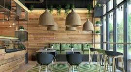
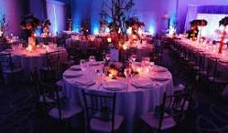
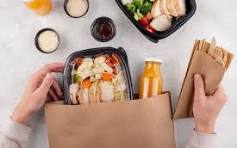
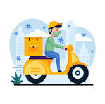
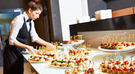

Ambiente Acogedor
En nuestro restaurante, disfrutarás de un ambiente cómodo y relajante, perfecto para compartir con familia y amigos. Tenemos zonas para todo tipo de eventos, desde cenas familiares hasta reuniones empresariales.
Atención Personalizada
Nuestro equipo está comprometido a ofrecerte una atención de primera. Desde el momento en que llegas, nuestro personal se asegurará de que tu experiencia sea agradable y única.
Eventos Especiales
Ofrecemos la organización de eventos especiales como bodas, aniversarios y celebraciones. Nuestro equipo de planificación se encargará de todos los detalles para que tu evento sea inolvidable.
Comida para Llevar
Si prefieres disfrutar de nuestra comida en casa, ofrecemos opciones para llevar. Escoge tu platillo favorito y llévalo contigo para saborear en cualquier lugar.
Servicio a Domicilio
Si prefieres disfrutar de nuestra comida sin salir de casa, tenemos servicio a domicilio. ¡Haz tu pedido y te lo llevamos directamente a tu puerta!
Catering para Empresas
Brindamos servicios de catering para empresas, asegurándonos de que tu evento corporativo sea un éxito. Ofrecemos menús personalizados que se adaptan a tus necesidades y presupuesto.
